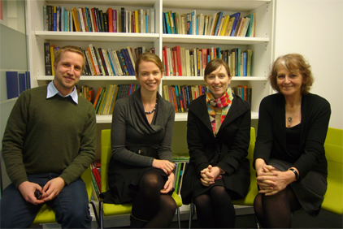

This project aims to shed new light on Australian strategies of knowledge-building and on agendas for future policies and practice. Taking physics, history and graduate competencies across the learning cycle, across institutional/equity differences and across three states, it investigates experiences, strategies and conceptions of knowledge-building today. Two fundamental internationally-debated issues for the 21st century are taken up: disciplinarity versus attribute-centred approaches to knowledge; and knowledge development from school to undergraduate to research training. The project will produce new evidence and insights on changes now in train and the ways in which knowledge-building is being developed, recreated or weakened by them.
Knowledge Building in Schooling and Higher Education is funded as an ARC Discovery Project 2011–2013. The project aims to undertake a qualitative and focused investigation of current Australian practices in history, physics and cross-program competencies across the learning cycle and takes up two central questions in relation to schooling and higher education:
1. Is the emphasis on learning outcomes and on auditing and managing education achievements in schooling and higher education distorting and undermining knowledge building?
2. How should we think about knowledge today?
The project develops from and builds on a previous ARC project focused on changes in the school curriculum over the past four decades. The former project showed the ambivalence today about how to conceptualise knowledge and knowledge-building, and what emphasis to give to it, in school curriculum policies, in comparison with attention to accountabilities and testing the basics, and concern with development of an employable person for the future. In particular, education systems were having difficulty reconciling the need to think about foundations, with a concern about the future and rapid changes of both knowledge and employment forms.
The project will study Australian policy texts and formulations, and practitioner perspectives and experiences of the knowledge-building agenda, in three fields of knowledge (history, physics and graduate attributes/cross-disciplinary competencies); in three state contexts (Vic, NSW and Qld); and across three levels of the education system (secondary schooling; undergraduate higher education; and research training postgraduate education). Through textual analysis and a large body of interviews, it will address questions relating to conceptions of knowledge, assessment and auditing effects and differential approaches and effects between states, between different kinds of institutions and between countries grappling with these issues.
In terms of significance, the project will provide one important means of assessing the strategies Australia has been taking in relation to knowledge-building across higher education, and will contribute to progress on major globally recognised questions for the future. The need to give fresh attention to knowledge and the work of schools and universities in the 21st century is evident in the research literature not just in education, but in sociology and social theory, philosophy, political science and economics.
This project will deliver new evidence and new insights in relation to the following:1. What approaches, conceptions of knowledge, priorities are now being developed within the teaching of history and physics in secondary schooling, undergraduate, and postgraduate research-oriented education?
2. How are cross-disciplinary, outcomes and attributes agendas impacting on institutional thinking in each stage?
3. What concepts of disciplinarity, new knowledge and capabilities are now at work in these phases, and with what coherence or problems?
4. Across the phases, and in relation to a focus on knowledge (as distinct from access), what differences are evident between elite and non-elite institutional contexts, and with what social equity implications?
The project aims to provide new empirical evidence about what is being set in train in history, physics and cross-program competencies across the learning cycle in Australia, and contribute fresh analyses to Australian policy and institutional interests as well as to international thinking and research on these questions. For those interested in a more detailed account of the background, rationale, design and international and national theoretical context of the project, this can be accessed through this link: Part E of the ARC application (PDF)
Contact Us
Dr Peter WoelertResearch Fellow Melbourne Graduate School of Education
The University of Melbourne, Vic, 3010
email: pwoelert@unimelb.edu.au
tel: + 61 3 8344 8732
Project Team

Lyn Yates is Chief Investigator and initiator of the project. She is Foundation Professor of Curriculum at the University of Melbourne. Lyn has a background in history, sociology, philosophy and a longstanding interest in the different ways academic disciplines, professionals and policy see curriculum and its problems and possibilities, beginning with her 1987 PhD on Curriculum Theory and Non-sexist Education. She has previously conducted six major ARC-funded projects, including the forerunner project School Knowledge, Working Knowledge and the Knowing Subject. Lyn’s previous publications include: The Education of Girls: Policy Research and the Question of Gender (1993); Reconstructing the Lifelong Learner (with C. Chappell et.al. 2003); What Does Good Education Look Like? Situating a Field and its Practices (2004); Making Modern Lives: Subjectivity, Schooling and Social Change (with J. McLeod, 2006); Curriculum in Today’s World (with M. Grumet, 2011) and Australia’s Curriculum Dilemmas (with C. Collins and K. O’Connor, 2011).
Peter Woelert is a postdoctoral Research Fellow at the Melbourne Graduate School of Education at the University of Melbourne. He has a PhD in philosophy from the University of New South Wales and a Masters degree in Sociology from the University of Frankfurt, Germany. His current research focuses on the political dimensions and cognitive effects of research and university governance systems, and has been published in journals such as Higher Education and Minerva: A Review of Science, Learning, and Policy. Peter also has a research interest in the philosophy of technology, with a particular focus on the epistemic and political dimensions of technological change.
Victoria Millar is a Lecturer in the Centre for the Study of Higher Education. She has a PhD in Education, an MSc in physics, a DipEd and a BSc(Hons) from the University of Melbourne. Her PhD investigated knowledge structures for disciplinary and interdisciplinary teaching in higher education. She also has a background in physics teaching at the secondary and undergraduate level.
Kate O’Connor is a Research Fellow and PhD candidate in the Melbourne Graduate School of Education. Kate’s PhD is exploring how knowledge is being conceptualised and framed in new forms of online courses. She was the project officer for the ARC-funded project School Knowledge, Working Knowledge and the Knowing Subject from 2009–10 and co-edited the book arising from that project, Australia’s Curriculum Dilemmas (2011), with Lyn Yates and Cherry Collins.
Work in Progress
Project Management and Establishment
Appointments of research fellows for this project were finalized in late March 2011 and the project effectively commenced in May that year. The setting up phase of the project involved literature reviews, ethics submission and approval, and setting up project data management and communications processes. Since July 2011, the research team has also worked to bring together an initial sourcing and analysis of professional bodies and associations’ policy documents and websites in terms of their positioning in relation to disciplinarity, competencies and outcome agendas and their framing in terms of knowledge building from school to doctorate. This work will continue into 2013 and is being presented in a range of formats as set out below.
Project Interviews
Interviews for the project began following ethics approval in August 2011 and are continuing through 2012. The project involves interviews of academics and teachers who work in physics, history or cross-disciplinary agendas at different kinds of institutions across the states of Victoria, NSW and Queensland. We are seeking to find out about practitioner thinking and practice in relation to knowledge, knowledge building and fields of work, and are asking questions about educational background, current teaching and research (where appropriate) and experiences of change. At the end of 2012 we had interviewed around 100 academics and teachers. Interviews will continue through to the first months of 2013, with a view to complete data collection by April 2013.
Presentations and Publications
2011
In October 2011, Peter Woelert presented a paper titled ‘The Externalized Mind: How Technology Restructures Thinking' at La Trobe University, Melbourne.
In November 2011, Peter Woelert and Vic Millar presented at the Knowledge/Culture/Social Change conference held in Sydney, Peter’s paper was titled ‘The Externalisation of Knowledge and its Cognitive Consequences’ and addressed some of ways in which electronic publishing challenges some of the established knowledge practices in the academe. Vic’s paper was titled ‘Knowledge in the University Curriculum’ and discussed how interdisciplinarity is approached and translated into teaching practice in various disciplines. Peter also presented a related paper titled 'The ‘Economy of Memory’: The Case of Scientific Culture' at the Macquarie University Centre for Cognitive Science while in Sydney.
In December 2011, Lyn Yates delivered the 2011 Radford Lecture for the Australian Association of Research in Education conference titled ‘My School, My University, My Country, My World, My Google, Myself…What is education for now?’. The paper has been published in the Australian Educational Researcher and is available from http://www.springerlink.com/content/10745n586h261520/
2012
On 16 March 2012, Lyn Yates presented a paper on 'Research and Knowledge Building' as part of the Monash Global Collaboration Conference Series symposium on Globalising higher education and institutional distinctiveness: understanding changes in curricula.
Peter Woelert delivered a paper titled ‘Tools for Action: What Technological Practice tells us about the Mind’ at a Distributed Cognition and Distributed Agency workshop at Macquarie University in March.
In June 2012, Lyn Yates, Peter Woelert, Vic Millar and Kate O’Connor convened a seminar as part of the University of Melbourne Centre for the Study of Higher Education’s (CSHE) Ideas and Issues in Higher Education Series titled ‘The Knowledge Question: Disciplines, Interdisciplinarity, and Institutional Change’. The papers discussed the project background, representations of knowledge between schooling and university, current and former university websites and academic departmental structures, and interdisciplinarity and research governance. A copy of the presentation is available here. (112.KB PDF)
Vic Millar presented at the 7th Annual Basil Bernstein Symposium held 27–30 June 2012 in Aix-en-Provence, France. Vic’s presentation ‘Disciplinary and interdisciplinary knowledge in higher education curricula’ was delivered as part of the Reconceptualising knowledge and practice session held on 28 June.
Lyn Yates presented a seminar titled 'Researching the knowledge-building question across schools and higher education' at the University of Sydney at on 25 July 2012. The seminar outlined the context for the work of the project in relation to: (1) the impact of auditing and management practices on schools and universities; (2) debates about curriculum and knowledge in the 21st century as to the value of traditions and disciplines compared with learner-centred or problem-based or attribute-based approaches; and (3) the genuinely open and difficult question about what, in this contemporary and rapidly changing world, is the role of formal education.
Lyn Yates presented two open lectures at the University of Oslo on 23 and 24 August 2012. The first lecture was titled ‘Curriculum politics and the knowledge question’ and discussed changing agendas of curriculum research over the last half-century, theories and movements that have been particularly influential, and the ways these have framed or challenged assumptions about knowledge and curriculum. The second was titled ‘Curriculum and capacity-building’ and discussed global movements and national responses, particularly in Australia, drawing on data from the KBP project to illustrate how the concerns with economic capacity building and social integration may be in tension with and even undermined by the new forms in which curriculum is publicly and politically discussed and governed and tested.
Lyn Yates presented a paper titled ‘Curriculum and capacity-building: Some contemporary tensions’ at the 2012 European Conference on Educational Research on 21 September. Lyn’s presentation formed part of a symposium titled ‘What kind of curriculum agendas are being carried in today’s global curriculum movements’, which also included presentations from Michael Young, Johan Muller and Berit Karseth. A copy of Lyn's presentation is available here.
On 12 October 2012, Kate O’Connor presented a virtual paper titled ‘Disciplines and the digital: The curricular implications of changes to knowledge online’ at the Fifth International Conference on Ubiquitous Learning.
On 24 October 2012, Peter Woelert published an opinion piece in The Australian higher education section on the ambivalent effects electronic publishing has had on research culture.
On 3 December 2012, Victoria Millar, Kate O’Connor and Peter Woelert presented papers as part of the symposium ‘Frames of knowledge: Policies, purpose, and institutional change in education’ at the Australian Association for Research in Education (AARE) conference held at the University of Sydney. Responding to the presentations was Prof. Fazal Rivzi from the University of Melbourne. Victoria’s paper was titled ‘What knowledge for whom: The struggle for purpose in discipline based curricula in secondary and higher education’, Kate’s paper was titled ‘Knowledge structure and representation on Australian university websites’, and Peter’s paper ‘The ‘paradox of interdisciplinarity’ in Australian university governance’.
On 5 December 2012 Lyn Yates gave a presentation at the City University of New York (CUNY) titled ‘Feminist insights: Politics, pedagogy, gender and policy in urban education’.
On 5 December 2012 Peter Woelert published an opinion piece titled ‘In research, less is more’ in The Australian higher education section. The piece discusses some of the detrimental effects of output-focused publication policies and provides an overview of recent quality-focused policy directions concerning publication taken in the US and Germany.
On 16 December 2012, Peter Woelert had his article ‘The ‘economy of memory’: Publications, citations, and the paradox of effective research governance’ accepted in the journal Minerva: A Review of Science, Learning, and Policy. The article will be published in the second half of 2013.
2013
On 1 February 2013 Lyn Yates’ paper ‘Revisiting curriculum, the numbers game and the inequality problem’ was published in the Journal of Curriculum Studies (Vol. 45, No. 1). The paper can be accessed through this link: http://www.tandfonline.com/doi/full/10.1080/00220272.2012.754949
On 1 March 2013 Kate O’Connor and Lyn Yates had their paper ‘Disciplinary representation on institutional websites: Changing knowledge, changing power?’ accepted for publication in the journal Journal of Educational Administration and History.
On 11 April 2013 Peter Woelert and Victoria Millar had their paper ‘The ‘paradox of interdisciplinarity’ in Australian research governance’ accepted for publication in the journal Higher Education.
On 3 June 2013 Peter Woelert and Victoria Millar published an opinion piece titled ‘The interdisciplinarity mismatch’ in the LH Martin Institute Newsletter. The piece is based on the above paper and points out some of the contradictions in the governance of interdisciplinary research in Australia.
On 12 June 2013 Peter Woelert published an opinion piece titled ‘Research citations more than a number’s game’ in The Australian higher education section. The piece addresses some of the problems with using citation numbers as a proxy for research quality or impact. Lyn Yates, Peter Woelert, Vic Millar and Kate O’Connor convened a two day colloquium on 25-26 July bringing together a number of academic visitors to discuss the research in progress and respond to working papers from the project. The visitors included Professor Michael Young (IoE, University of London), Professor Joe Muller (University of Capetown, South Africa), Professor Lesley Farrell (University of Technology, Sydney) and Professor Terri Seddon (Monash University). The colloquium included two open seminars: one presented by Joe Muller and Michael Young on 24 July titled ‘Disciplines, Skills and the University’, and a second on 26 July titled ‘The Structuring of Knowledge Across Schooling and Higher Education’ which featured presentations from all colloquium participants. The latter session featured an overview of the ARC project and focused on issues from the discussion of the past two days. This included questions and concerns around what a discipline looks like, the curriculum/pedagogy nexus, the purpose of education, and the nexus between governance and knowledge. The visit by Joe Muller was funded by a University of Melbourne Dyason Fellowship.
In September, Lyn Yates and Kate O’Connor attended the 2013 European Conference on Educational Research (ECER) in Istanbul. Lyn presented a paper titled ‘Struggling with the role of the history subject in the school curriculum’ as part of a symposium on ‘Knowledge agendas, humanities subjects and equity: Curriculum and policy reform’. Kate’s paper was titled ‘New forms of online learning: Institutional policies and the framing of knowledge in changing times’ and was presented as part of the ‘Emerging Researchers’ section of the conference.
Lyn Yates and Kate O’Connor visited the University of Oslo, Norway, in the last week of September. The visit was sponsored by the ‘Higher Education: Institutional dynamics and knowledge cultures’ (HEIK) group of the Faculty of Educational Sciences. During the visit Lyn and Kate delivered a seminar titled ‘Disciplinarity and the (re)structuring of knowledge in Australian universities’. Further details regarding the seminar are available at http://www.uv.uio.no/english/research/groups/heik/HEIK_seminars/2013/heik-ac-seminar-2013-09-25.html
Kate O’Connor presented at the European Conference on Curriculum Studies (ECCS) which was held in Braga, Portugal on 18-19 October. Kate’s paper was titled ‘Curriculum content and the engagement issue: Problems for the sociology of knowledge’.
Project Publications:
Peer-reviewed:
- Yates, Lyn (2012). ‘My School, My University, My Country, My World, My Google, Myself…What is education for now?’. The Australian Educational Researcher, 39(3): 259-274.
- Woelert, Peter (2012). ‘Idealization and external symbolic storage: The epistemic and technical dimensions of theoretic cognition’. Phenomenology and the Cognitive Sciences, 11(3): 335-366.
- Yates, Lyn (2013). ‘Revisiting curriculum, the numbers game and the inequality problem’. Journal of Curriculum Studies, 45(1): 39-51. http://www.tandfonline.com/doi/full/10.1080/00220272.2012.754949
- O’Connor, Kate & Yates, Lyn (forthcoming, 2013). ‘Disciplinary representation on institutional websites: Changing knowledge, changing power?’. Journal of Educational Administration and History.
- Woelert, Peter & Millar, Victoria (forthcoming, 2013). ‘The ‘paradox of interdisciplinarity’ in Australian research governance. Higher Education. DOI 10.1007/s10734-013-9634-8.
- Woelert, Peter. (forthcoming, 2013). ‘The ‘economy of memory’: Publications, citations, and the paradox of effective research governance’. Minerva: A Review of Science, Learning and Policy. DOI 10.1007/s11024-013-9232-z.
- Woelert, Peter (forthcoming, 2013). ‘Technology, knowledge, governance: The political relevance of Husserl’s critique of the epistemic effects of formalization’. Continental Philosophy Review.
Publications in newspapers/opinion pieces:
- Woelert, Peter. ‘Critical case of too much information’. The Australian, Higher education section, 24 October 2012.
- Woelert, Peter. ‘In research, more is less’. The Australian, Higher education section, 5 December 2012.
- Yates, Lyn. ‘Mining young minds: the challenges of private interests and education’. The Conversation, 15 February 2013. http://theconversation.com/mining-young-minds-the-challenges-of-private-interests-and-education-12133
- Woelert, Peter & Millar, Victoria. ‘The interdisciplinarity mismatch’. LH Martin Institute Newsletter, 3 June 2013. http://www.lhmartininstitute.edu.au/insights-blog/2013/06/130-the-interdisciplinarity-mismatch.
- Woelert, Peter. ‘Research citations more than a number’s game’. The Australian, Higher education section, 12 June 2013.
Related Publications (pre-2012)
- Yates, L., Collins, C. and O’Connor, K. (Eds) (2011) Australia’s Curriculum Dilemmas: state cultures and the big issues. Melbourne University Publishing, Melbourne.
- Yates, L. and Grumet, M. (Eds) (2011) Curriculum in Today’s World: configuring knowledge, identities, work and politics, World Yearbook of Education 2011, Routledge, Abingdon, U.K.
- Yates, L. and Young, M. (2010) Globalisation and the curriculum. European Journal of Education , 45(1), pp. 5-12.
- Yates, Lyn (2010) ‘Quality agendas and doctoral work: the tacit, the new agendas, the changing contexts’. In P. Thomson and M. Walker (ed) Getting to Grips with Research in Education and the Social sciences: The Routledge Doctoral Student’s Companion. Routledge: London. (pp. 299-310).
- Yates, L. and Collins, C. (2010) The absence of knowledge in Australian curriculum reforms. European Journal of Education , 45(1): 93-106.
- Yates, L. (2009) From curriculum to pedagogy and back again: knowledge, the person and the changing world. Pedagogy, Culture & Society , 17(1): 17-28.
- Yates, L. (2011) Curriculum as a public policy enterprise: Australian state differences and the past forty years of curriculum reforms. [contribution to symposium on: Curriculum policy: cases of translation], BERA Annual Conference, London, September.
- Yates, L. and Collins, C. (2008) Australian curriculum 1975-2005: what has been happening to knowledge? [contribution to Australian Curriculum Inquiry as ‘Really Useful’ Educational Research: A Symposium], AARE Conference: QUT Brisbane , December.
- Yates, Lyn (2007) ‘Who counts as well as what counts: the desire to be ‘world class’ in Australia’, European Educational Research Journal, [part of EERJ roundtable on ‘Knowledge and Policy: research – information- intervention’], 6(3): 298-302.
- Yates, Lyn (2006) ‘What can schools do? Knowledge, social identities nd the changing world’, (Inaugural Professorial Lecture as Professor of Curriculum at the University of Melbourne.